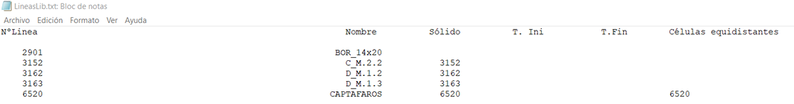
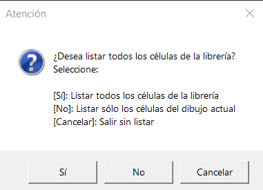
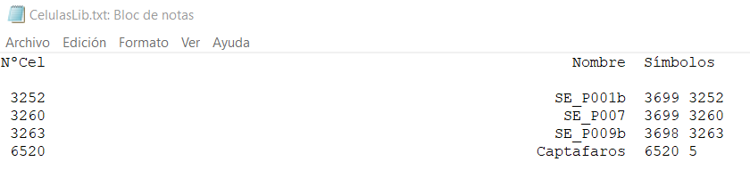

| |
|
ÇİZGİ, SEMBOL, METİN VE HÜCRE PALETLERİ
|
|
Çizgi Paleti Sembol Paleti Metin Paleti Hücre Paleti Tüm Çizgi Tiplerini Listele Tüm Sembol Tiplerini Listele Tüm Metin Tiplerini Listele Tüm Hücre Tiplerini Listele (.txt dosyasına) Tüm Çizgi Tiplerini Listele Belirtilen çizgi tipleriyle, ekranda çizilerek EDM olarak kaydedilebilen özel bir katalog paftası oluşturmayı sağlar. Aşağıdaki bilgileri içeren LineasLib.txt adında bir .txt dosyası listesi oluşturulur:  Çizgi No: kütüphanedeki çizgi numarası Ad: O çizgi numarasına atanan ad Katı Model: O çizgiyle ilişkili QA katı modelinin numarası (varsa) Bşl. Hücre: O çizgiyle ilişkili QA katı modelinin başlangıç hücresi Btiş. Hücre: O çizgiyle ilişkili QA katı modelinin bitiş hücresi Eşit Aralıklı Hücreler: O çizgiyle ilişkili QA'ya direk/baba olarak atanan hücre Tüm Hücre Tiplerini Listele (.txt dosyasına) Kütüphanedeki tüm hücrelerle veya çizimde kullanılan hücrelerle bir liste oluşturmayı sağlar. 
Evet: Projeyle ilişkili kütüphanelerdeki tüm hücreleri listeler. Hayır: Sadece mevcut çizimde kullanılan hücreleri listeler. Liste: 
Hücreyle ilişkili tüm semboller, numaralarıyla tanımlanarak gösterilir. |